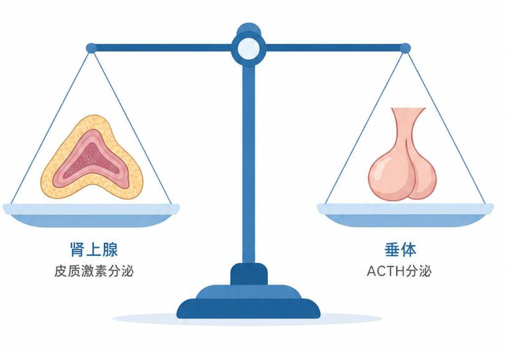

二、压力轴（HPA）深度评估
肾上腺皮质功能与压力应对
- 详细分析 ACTH 和皮质醇水平，评估下丘脑-垂体-肾上腺轴的基础应激调节能力。
- ACTH（促肾上腺皮质激素）：5.00 pmol/L，参考区间 1.59-13.98 pmol/L，结果正常。
- CORT（皮质醇）：188.00 nmol/L，参考区间 125.5-574.4 nmol/L，结果正常。

结果解读
孙楠楠女士的 HPA 轴功能良好，肾上腺皮质激素分泌处于健康水平，表明身体对压力的调节能力正常。
压力激素与睡眠状态评估健康管理报告 | 第03/10页
肾上腺皮质功能与压力应对

孙楠楠女士的 HPA 轴功能良好，肾上腺皮质激素分泌处于健康水平，表明身体对压力的调节能力正常。